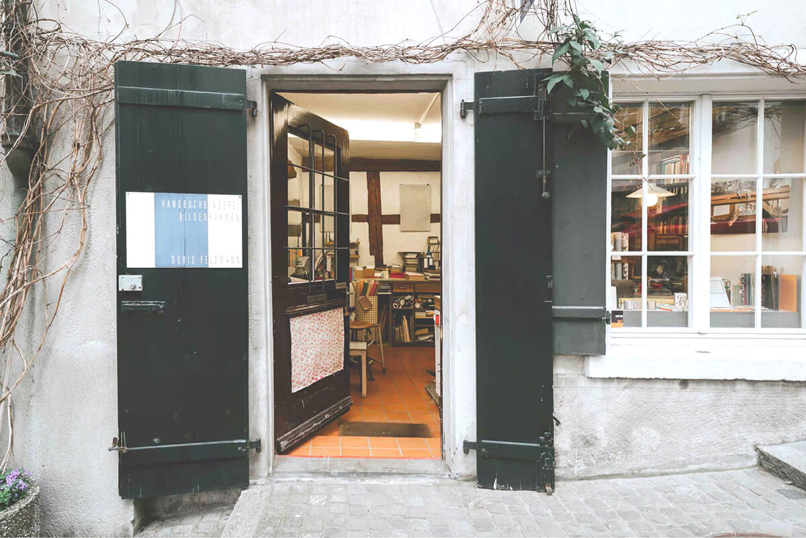

こんにちは！CTABELL 新宿店です。当サロンでは、最新の道具と定期的なトリマーの研修を行い、飼い主さまにもペットにも優しいトリミングとサービスをご提供できるように日々努めています。 また、健康状態のチェックや皮膚の状態をチェックするのは、トリミングを行う前にとても大切ですので、きちんと確認を行った上で、その子に合った最適なスタイルをご提案させていただきます。ご要望などがありましたら、お気軽にお申し付けください。スタッフ一同常に笑顔で皆さまのご来店をお待ちしています。
2022.02.24
人とコミュニケーションをとること、物理的に触れたり、間接的に感じたりすることが、今や遠隔で完結できるようになった。もともと「繋がり」という形を持たない結びつきではあるが、あらゆる物事と実際に接点を持つ場面がが減っている中、生身の身体が受け取る感覚はこれからどんなふうに変わっていくのだろうか。人とコミュニケーションをとること、物理的に触れたり、間接的に感じたりすることが、今や遠隔で完結できるようになった。もともと「繋がり」という形を持たない結びつきではあるが、あらゆる物事と実際に接点を持つ場面がが減っている中、生身の身体が受け取る感覚はこれからどんなふうに変わっていくのだろうか
#ヘルスケア #プレゼント #キャンペーン2022.02.24
人とコミュニケーションをとること、物理的に触れたり、間接的に感じたりすることが、今や遠隔で完結できるようになった。もともと「繋がり」という形を持たない結びつきではあるが、あらゆる物事と実際に接点を持つ場面がが減っている中、生身の身体が受け取る感覚はこれからどんなふうに変わっていくのだろうか。人とコミュニケーションをとること、物理的に触れたり、間接的に感じたりすることが、今や遠隔で完結できるようになった。もともと「繋がり」という形を持たない結びつきではあるが、あらゆる物事と実際に接点を持つ場面がが減っている中、生身の身体が受け取る感覚はこれからどんなふうに変わっていくのだろうか
#ヘルスケア #キャンペーン2022.02.24
人とコミュニケーションをとること、物理的に触れたり、間接的に感じたりすることが、今や遠隔で完結できるようになった。もともと「繋がり」という形を持たない結びつきではあるが、あらゆる物事と実際に接点を持つ場面がが減っている中、生身の身体が受け取る感覚はこれからどんなふうに変わっていくのだろうか。人とコミュニケーションをとること、物理的に触れたり、間接的に感じたりすることが、今や遠隔で完結できるようになった。もともと「繋がり」という形を持たない結びつきではあるが、あらゆる物事と実際に接点を持つ場面がが減っている中、生身の身体が受け取る感覚はこれからどんなふうに変わっていくのだろうか
#ポイントDay #ヘルスケア